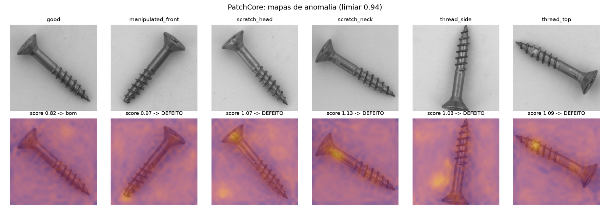

01Problema e dados
Numa linha de produção quase todas as peças são boas e cada defeito é diferente. Os modelos aprendem só o que é normal (One-Class) e precisam reconhecer defeitos que nunca viram.

MVTec AD, categoria screw. Treino: 320 boas. Teste: 41 boas e 119 defeituosas em 5 tipos.
As 64 boas reservadas só definem o limiar (quantil de 95%: meta de rejeitar 5% das boas). O teste foi usado uma única vez, com tudo congelado.
02Visão clássica: segmentar, alinhar, descrever

Escala de cinza, CLAHE, binarização de Otsu, morfologia, ROI alinhada (cabeça à esquerda) e HOG.
25.380 atributos de forma
24 de textura da rosca
3 de rugosidade
6 da silhueta
O vetor de 25.413 atributos, reduzido por PCA para 25 ou 43 dimensões, alimenta cinco detectores: One-Class SVM, k-NN, Mahalanobis, Isolation Forest e LOF. Hiperparâmetros escolhidos em divisões internas das 256 boas.
03Redes neurais
PatchCore
Uma Wide ResNet-50 pré-treinada no ImageNet descreve cada pequena região da imagem. As regiões dos 256 parafusos bons formam um banco de memória (20.070 vetores). O score é a maior distância de uma região até a região boa mais parecida.
Autoencoder convolucional
Treinado do zero para reconstruir parafusos bons; o erro de reconstrução vira o score.
04Onde está o defeito

Mapas do PatchCore: a região clara cai sobre o defeito. Descritores globais resumem a peça inteira, e a variação normal (fase da rosca, reflexos) pesa mais que um risco de poucos pixels.
05Resultado no teste
| Modelo | FN /119 | FP /41 | Recall | AUC |
|---|---|---|---|---|
| PatchCoreRN | 13 | 3 | 89,1% | 0,964 |
| k-NN | 94 | 5 | 21,0% | 0,651 |
| Isolation Forest | 100 | 3 | 16,0% | 0,634 |
| LOF | 104 | 3 | 12,6% | 0,622 |
| One-Class SVM | 110 | 1 | 7,6% | 0,438 |
| AutoencoderRN | 117 | 0 | 1,7% | 0,795 |
| Mahalanobis | 118 | 0 | 0,8% | 0,528 |
FN: defeito aprovado como bom (o erro mais caro). FP: bom rejeitado. Ordem: menos FN, depois maior especificidade. PatchCore por tipo: thread_top 23/23, scratch_neck 24/25, manipulated_front 20/24, scratch_head 20/24, thread_side 19/23.
06Curvas ROC

Ponto = limiar calibrado. Os clássicos ficam perto da diagonal do acaso.
07Verificação de robustez
As boas do teste são mais escuras (brilho 170) que as de treino (184) e as defeituosas (187). Só o brilho separaria o teste com AUC 1,0.
AUC com as 64 boas reservadas no lugar das boas de teste, sem reajustar nada:
- PatchCore: 0,964 para 0,979. O resultado se mantém.
- Autoencoder: 0,795 para 0,58. Sua AUC vinha do brilho.
- Clássicos: entre 0,40 e 0,63, perto do acaso.
08Conclusão
- Modelo escolhido: PatchCore. Detecta 106 de 119 defeitos e rejeita 3 de 41 boas, aprendendo só com 256 imagens boas e sem re-treinar a rede.
- A segmentação clássica funciona, mas descritores globais não enxergam defeitos pequenos e locais.
- Limites: teste pequeno (160 imagens) e o viés de brilho do próprio dataset.